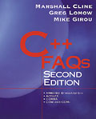

[ C++ FAQ Lite | Table of contents | Subject index | About the author | © | Download your own copy ]
Revised Mar 1, 2006
Yes, the book is C++ FAQs by Cline, Lomow, and Girou, Addison-Wesley, 1999, ISBN 0-201-30983-1.

It gets five-star ratings () on Amazon.com, and is available in bookstores. You can download an overview and table of contents, a sample chapter, and the source code for the book's examples.
Here's the book at a few online bookstores (listed alphabetically):
[ Top | Bottom | Previous section | Next section | Search the FAQ ]
Yes there is a big difference.
At last count, the C++ FAQ Book is 500% larger than the C++ FAQ Lite.
Bottom line: the book and this Lite document are not the same. The book is both broader and deeper — it covers subjects that aren't covered in this Lite document, and it covers subjects in more detail than this Lite document.
In addition, the book has lots and lots of programming examples — many more than are in this Lite document.
[ Top | Bottom | Previous section | Next section | Search the FAQ ]
 E-mail the author
E-mail the author
[ C++ FAQ Lite
| Table of contents
| Subject index
| About the author
| ©
| Download your own copy ]
Revised Mar 1, 2006